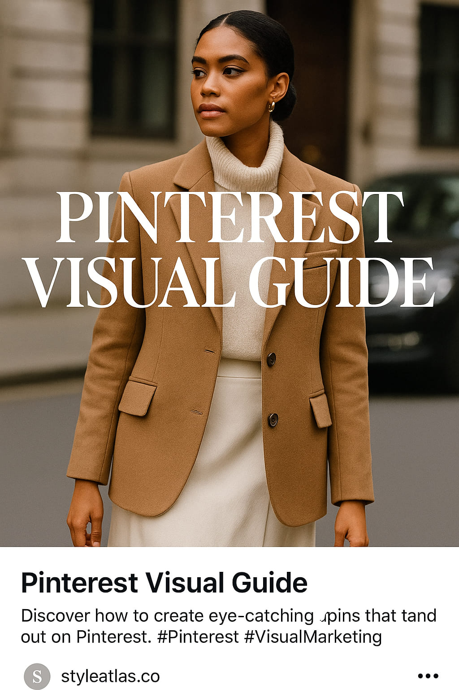

Pinterest Visual Guide: How to Master the Fashion Pin Game in 2025
From inspiration boards to personal branding, this is your editorial deep dive into how Pinterest is redefining visual fashion culture this year.
In the fast-scrolling chaos of TikTok and Instagram, Pinterest has quietly re-emerged as the visual sanctuary for fashion lovers, stylists, editors, and brands. With 482 million monthly users and growing, it’s not just a moodboard platform—it’s a personal style engine, a brand discovery hub, and in 2025, a serious tool for revenue and reach.
"Pinterest is the last place where fashion breathes slowly, beautifully, and with intention." — Marla Gaye, visual strategist at Vogue Business
Why Pinterest Now?
Unlike algorithm-heavy platforms, Pinterest isn’t about going viral. It’s about staying visible. Pins last years, not seconds. Users come with purpose, not just boredom. And most importantly, fashion lives here not as a trend but as a timeless archive. It’s the only platform where a 2016 Acne Studios lookbook still gets engagement today—and that’s power.
The New Fashion Pin Categories in 2025
- Curated Outfit Guides: Full looks by season, city, or style (e.g. “Madrid Linen Looks”, “Tokyo Commuterwear”).
- Micro-Aesthetic Boards: Boards like “Library-core for Summer” or “Post-Minimalism NYC” thrive on niche storytelling.
- Shopping-Integrated Pins: Fashion creators now link to their affiliate shops directly within carousel pins, including Etsy or Amazon storefronts.
- Style Evolution Timelines: Boards that show how a personal or public figure’s style has evolved year by year. Pure gold for engagement.
Moodboard power: Fashion pins don't chase attention. They earn loyalty.
Board Building as a Style Practice
Creating boards isn’t just about inspiration—it’s a mirror. Many stylists, editors, and even emerging designers build boards to test collections, spot palette patterns, or rehearse aesthetic concepts before producing them IRL. If Instagram is a highlight reel, Pinterest is the design sketchbook.
"I tell clients to pin like a designer, not a consumer. That's where the clarity starts." — Siobhan Noé, personal stylist
The Visual Rules of Engagement
Fashion pins that perform share common DNA:
- Vertical. Always. 1000 x 1500 px is optimal.
- Real photos over graphic edits—raw texture > polish.
- Neutral color palettes perform 30% better in 2025 trends.
- Style-focused text overlay is rising: small, serif, poetic.
- Consistency in tone and palette across a board = higher saves.
Boards with strong palettes become aesthetic signatures over time.
Pinning as Self-Branding
What once was a private collection has now become a portfolio. Fashion creators and even casual style lovers use boards to define their own visual identity. The “style manifesto” board—a visual diary of beliefs, moods, favorite pieces—is the new digital business card.
Key Pinterest Fashion Trends in 2025
- “Quiet Fashion” Pins: Minimalist streetwear, neutral palettes, architectural tailoring.
- “Romantic Archive” Boards: Vintage editorials from old Vogue, Harper’s Bazaar, and indie print magazines.
- “Global Lookbooks”: Style-by-country is exploding—users now search “Italian wedding outfit 2025” or “Moroccan streetwear.”
- “Unstyled Looks”: Pins that look effortless, raw, and unfiltered perform better than hyper-produced shots.
Effortless > Editorial. Raw is the new curated in 2025 visual trends.
How Style Atlas Uses Pinterest
At Style Atlas, every article becomes a board. Every photoshoot a visual map. We don’t just publish—we pin with strategy. Our readers use our boards as visual libraries: outfit formulas, seasonal palettes, silhouettes by mood. We’ve seen traffic quadruple just from consistent, strategic pinning across themes like “Modern Paris”, “Seoul Summer Looks”, and “Style in Transit”.
Tips to Build a High-Impact Fashion Board Today
- Name your board like an editorial column, not a file folder.
- Start with 9–12 images. Fill gaps weekly. Stay active.
- Use a consistent cover layout: same crop, same vibe.
- Add links—but only when each image is visually strong first.
- Repin from your own blog weekly for internal SEO boost.
Final Thoughts
In 2025, Pinterest isn’t just a platform. It’s a visual ritual. A digital sketchbook. A timeless, algorithm-proof canvas where style breathes and grows. Whether you’re a casual user or building a brand, mastering the Pin Game means mastering your visual voice. And in the fashion world—that’s everything.
Words by Style Atlas